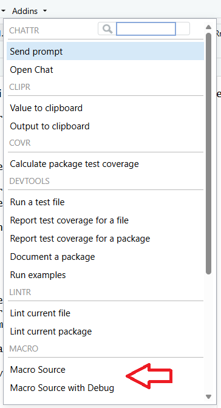
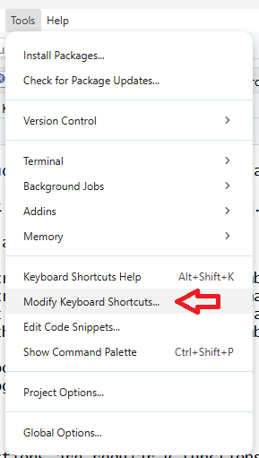
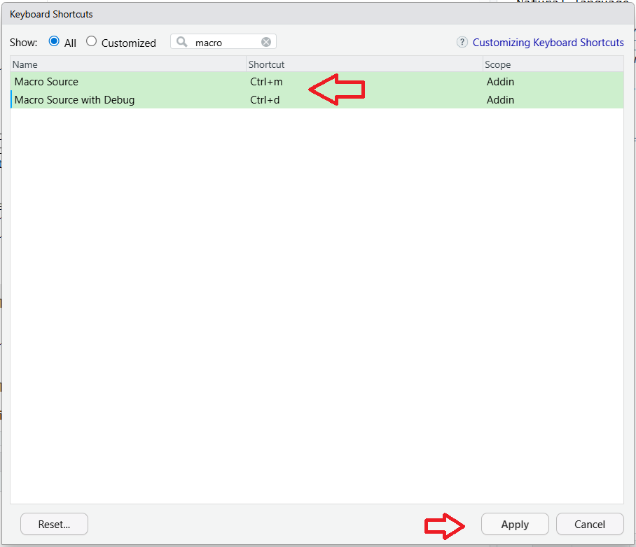
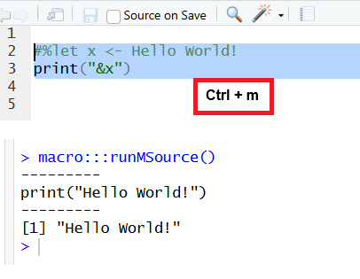

The macro package can be used interactively in RStudio®. First, it requires a basic package install.
Package Install
You can install the macro package by executing the following command in the R console:
install.packages("macro")Upon completion of the install, the macro package will be available for use in scripts and programs. To enhance the user experience, it is recommended that you set up the package for interactive use in your IDE. The subsequent instructions explain how.
Addin Menu
The macro package contains an Addin menu to facilitate interactive use. The addin menu should be available in RStudio upon basic installation.
First, check that you see the macro package menu items in your “Addins” drop-down:

There are two menus on the Addin:
Macro Source: Calls the function
runMSource(). This function is specially built for the Addin menu. It runs themsource()function in normal mode, but with the “clear” parameter set to FALSE and the “envir” parameter set to the global environment.Macro Source with Debug: Calls the function
runMSourceDebug(). This function runsmsource()in debug mode. The “debug” and “symbolgen” parameters are set to TRUE, and the “clear” and “envir” parameters are set the same as above.
You may use the above menus any time by navigating to the Addin menu with your mouse. However, the reason the Addin menus have been included in the package is so that they can be tied to keyboard shortcuts. The keyboard shortcuts can greatly improve efficiency in using the package.
Keyboard Shortcuts
Setting up keyboard shortcuts may be somewhat different depending what operating system you are using. The instructions and images below are for RStudio on Windows. Please adjust the instructions as appropriate for your operating system.
To connect keyboard shortcuts to the macro package Addin menu, take the following steps:
-
Go to the Tools -> Modify Keyboard Shortcuts menu.

-
Type the word “macro” on the search bar.

-
On the “Macro Source” row, put your cursor in the “Shortcut” column and press the “Ctrl” key and the “m” key. Then on the “Macro Source with Debug” row, put your cursor in the “Shortcut” column and press the “Ctrl” key and the “d” key.

Press the “Apply” button and close the shortcuts dialog.
The macro package shortcuts are now enabled in your IDE.
Test Interactive Usage
To test your shortcuts, open a new R script file, and type the following:
#%let x <- Hello World!
print("&x")Then select the above code, and press Ctrl+m. You should see “Hello World!” appear in your console:

Next, select the above code again, and press Ctrl+d. The debug output should appear in the console:

As a final test, don’t select any code and press Ctrl+m again. The function should run the entire script, and produce the same results as above.
Now your environment is set up to use the macro package interactively. Enjoy!